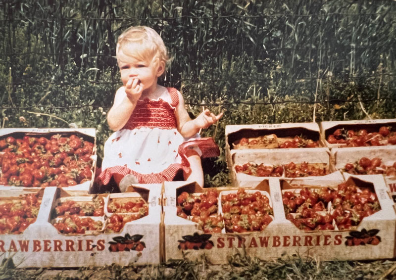
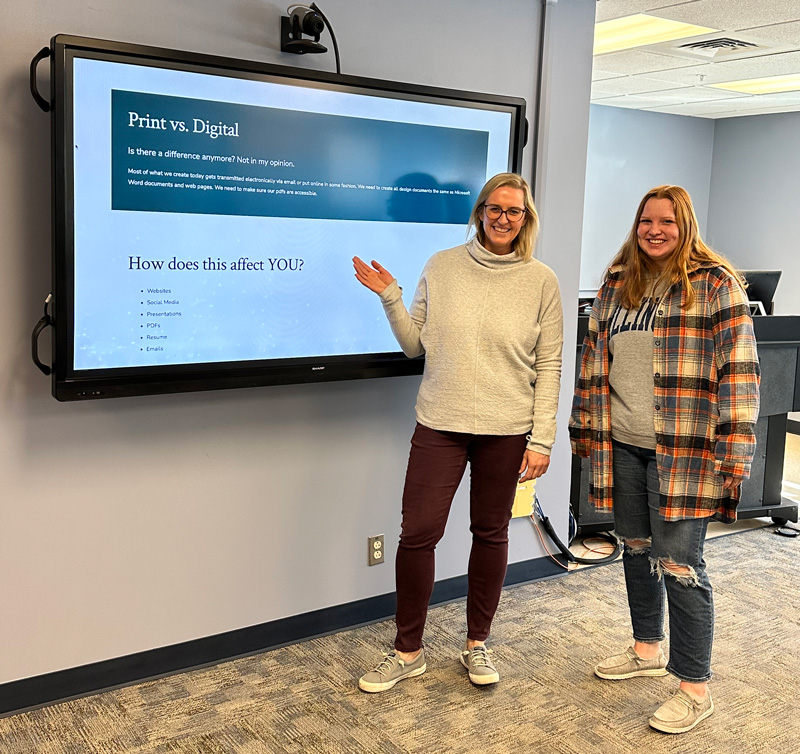
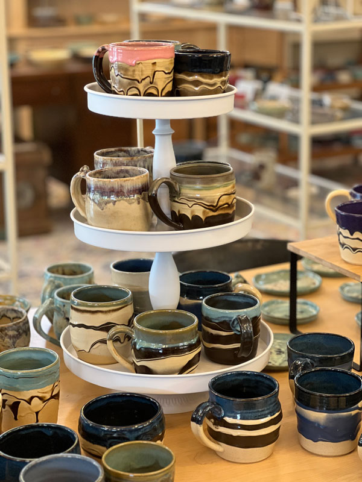

About
Creative roots. Systems mind. Deep care for how people learn, collaborate, and grow.
Before Design, There Was the Farm
I grew up on a small u-pick farm in central Illinois.
Every summer revolved around:
- Strawberries (mmmm the sweet smell of the ripe strawberry patch)
- Blueberries
- Red raspberries
- Showing customers where to pick each day
- Early mornings
- Constant problem-solving
- Figuring things out as a family
There was always work happening behind the scenes:
- Organizing systems
- Helping customers
- Improving workflows
- Fixing things quickly when they broke
Looking back, I think that environment shaped how I approach design today. I became fascinated by the invisible parts of experiences - the things people may never notice when they work well, but absolutely feel when they don't.
At the same time, I was always creative. I loved art from a young age, studied graphic design in college, and became a self-taught photographer along the way. What started as visual creativity slowly evolved into a deeper curiosity about how people interact with systems, information, and each other.

Getting Curious About UX
As my career evolved, I found myself increasingly drawn to the bigger picture behind design.
Not just:
- What something looked like (although that is still important)
- But how it worked
- How teams collaborated
- How systems scaled
- How communication broke down
- How thoughtful design could reduce friction
That curiosity eventually led me into UX, design systems, and operational design work.
I realized I loved creating the kinds of patterns and experiences that feel effortless to people using them. The best systems often disappear into the background because they work so naturally.
That's still one of my favorite parts of design.
Creating something so intuitive, accessible, and well-structured that people barely notice it's there.
Building Better Experiences for More People
Working at the University of Illinois, I always knew digital experiences needed to be accessible and meet WCAG standards, but early on, I mostly saw accessibility as a requirement rather than something I deeply understood.
That changed during my time at the university.
I had the opportunity to work on projects alongside some incredible disability advocates and accessibility leaders at the university. The University of Illinois has long been recognized as a leader in accessibility and disability inclusion, and being surrounded by people who genuinely cared about creating equitable experiences completely changed how I thought about design.
Something really clicked for me.
Accessibility stopped feeling like a checklist and started feeling like a much bigger design responsibility:
- Reducing friction
- Creating clarity
- Supporting independence
- Designing for real human experiences
I became fascinated by how thoughtful design decisions could dramatically impact someone's ability to navigate, understand, and participate fully in digital experiences.
That curiosity turned into a deep passion, and I dove in head first.
I earned my CPACC certification and eventually began leading accessibility initiatives at scale - building training programs, governance models, QA systems, workflows, and operational standards across enterprise UX organizations.
Today, accessibility remains a major part of my work, but I see it as part of a broader philosophy around inclusive design, communication, and systems thinking. What I enjoy most is helping teams move beyond compliance and toward building experiences that genuinely work better for more people.

What I Love Most
I love being a coach and mentor.
Some of my favorite moments are:
- Seeing a designer have a "lightbulb moment"
- Helping teams connect the dots across disciplines
- Watching people gain confidence in their work
- Building systems that make good design easier to scale
I also love creating experiences and patterns that feel seamless - the kinds of things users may never consciously notice because they simply work the way they should.
A lot of my work lives at the intersection of:
- Inclusive design
- Systems thinking
- Communication
- Operational clarity
- Creativity
- Cross-functional leadership
And honestly, I just love building cool things with smart people.
I am endlessly curious and usually deep into learning something new:
- AI tools and workflows
- Design systems
- Accessibility innovation
- Ceramics
- Photography
- CrossFit coaching
- A pretty serious obsession with pickleball
At the center of everything I do is curiosity, creativity, empathy, and a desire to make things better - for users, teams, and the people behind the work.
